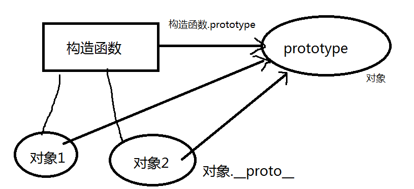

梳理知识点
对象创建的几种方法 及 优缺点 ：
1、obj = new Object() obj = { }
2、工厂模式创建多个同类对象 类 对象
function animal(name){
var obj = new Object();
obj.name = name
obj.eat = function(){...}
return obj
}
var obj = animal("大白")
3、构造函数
function Animal(){
//构造函数中的this指向的是构造函数new出来的对象
this.name = "xiaobai"
this.eat = function(){...}
}
var animal = new Animal(); 实例化一个对象 （创建一个对象）
var a2 = new Animal()
缺点 ： 同类对象的方法会被重复创建
4、原型
function Animal(){
}
Animal.prototype.name = "xb"
Animal.prototype.eat = function(){
this //指向构造函数new出来的对象
}
var animal = new Animal()
var animal2 = new Animal()
5、混合
2、原型对象
所有的构造函数都有一个prototype属性，这个属性叫做原型对象 构造函数.prototype
所有的构造函数new出来的对象也都有一个prototype对象，但是 实现 对象.__proto__

原型方法和普通方法的区别 ：
原型方法可以复用 普通方法不可以复用
原型方法优先级低 普通方法优先级高 (class 和 style)
原型属性和实例属性优先级 ：
原型属性的优先级低
3、原型链
实例对象和原型之间的链接 叫做原型链 __proto__

4、原型模式的执行流程
1、首先在实例中查找，如果找到就返回
2、如果在实例中没有查找到 就去原型中查找 ，如果查找到就返回
3、如果在原型中没有找到 去Object的原型上查找，如果找到就返回 如果没找到 就返回undefined
练习 ：
在Array的原型上实现一个数组去重的方法
Array.prototype.norepeat = function(){
var brr = [];
for( var i = 0 ; i < this.length ; i++ ){
if( brr.indexOf(this[i]) == -1 ){
brr.push( this[i] );
}
}
return brr;
}
在String的原型上实现一个去掉字符串两点空白的方法 trim()
String.prototype.trim = function(){
return this.replace( /(^\s+)|(\s+$)/g , "" );
}
5、原型中的关键字
测试某个对象是否属于某个类的方法 isPrototypeOf()
语法： 构造函数.prototype.isPrototypeOf(对象):判断一个对象是否指向了该构造函数的原型对象，可以使用isPrototypeOf()方法来测试 结果为boolean类型 同 instanceof
delete ：删除实例属性
语法 ： delete 对象.实例属性
hasOwnProperty() 是否包含该实例属性,包含返回true，否则返回false
语法： 实例对象.hasOwnProperty("实例属性")
in 是否存在该属性（原型或实例中）
语法： "属性" in 对象实例
6、面向对象的三大特性
封装 ： 屏蔽内部细节
继承 ： 子类继承父类 （继承父类所有的属性和功能）
多态（js中没有）
7、继承方式一 -- 通过改变父类的执行环境
子类中有一个特殊属性 指向父类 ， 通过子类的属性 调用父类
8、继承方式二、三
call() 和 apply() 的继承 ： 只能继承实例属性和实例方法
区别 ：
call的第二个参数的个数不固定
apply的第二个参数是一个数组 可以通过arguments代替这个数组，提高编程效率
9、继承方式 四
原型继承 ：
子类.prototype = new 父类()
缺点 ：如果父类的实例属性值 不固定，原型继承 继承实例属性值时 值无法更改
10 、 混合继承
通过 call或apply方式继承 实例属性
通过 原型方式继承原型方法